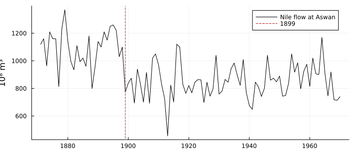
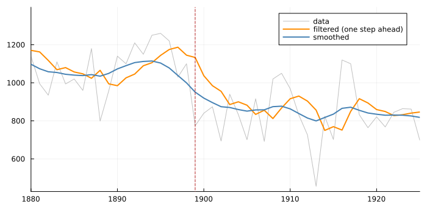
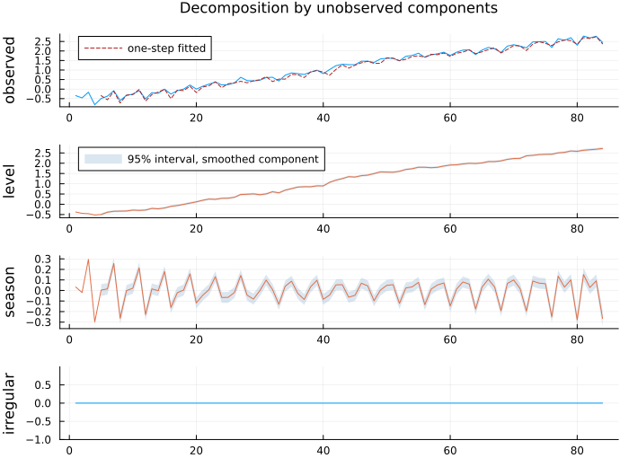
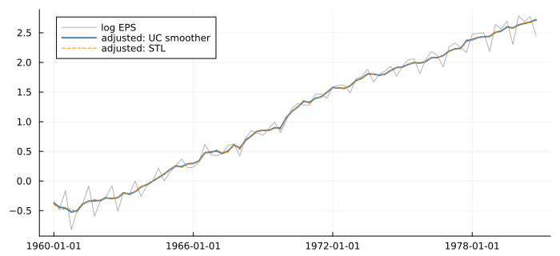
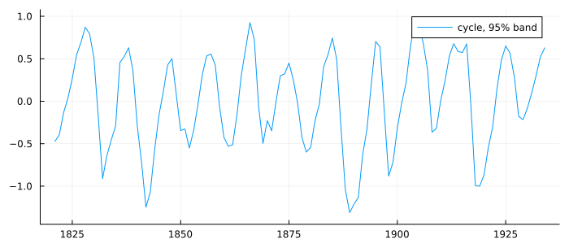

The Components You Cannot See
using TSAnalytics, Plots, DelimitedFiles, Statistics
nile = readdlm(TSAnalytics.NILE, ',', skipstart = 1)[:, 2]
years = 1871:1970
println("mean flow 1871-1898: ", round(mean(nile[1:28]), digits = 1),
" 1899-1970: ", round(mean(nile[29:end]), digits = 1))mean flow 1871-1898: 1097.8 1899-1970: 850.0plot(years, nile; color = :black, label = "Nile flow at Aswan", size = (700, 300),
ylabel = "10⁸ m³", legend = :topright)
vline!([1899]; color = :firebrick, linestyle = :dash, label = "1899")
Part III took a series apart with procedures: moving averages in Chapter 14, local regression in Chapter 15. They return a trend and a seasonal, but not how sure they are about either, because nothing in them is a model of the data. This chapter takes a series apart with a model — one in which the level, the slope and the seasonal are unobserved random processes, each with a variance to estimate — and gets back what a procedure cannot: every component with a standard error, a likelihood to compare specifications by, and forecasts that follow from the same equations.
The Nile is the canonical example (Durbin & Koopman 2012, ch. 2). Its mean fell by about a fifth after 1898, when the first Aswan dam was built. A good decomposition should find the drop without being told when it happened.
These models are also called structural time series models (Harvey 1989; Tsay 2010, §11.3.5). That is unrelated to the structural VAR of Chapter 51; the clash of names predates both.
This chapter writes the state-space form as Tsay (2010, Eqs. 11.26–11.27, printed pp. 576–577, PDF 603–604) and Durbin & Koopman do, y_t = Z α_t + ε_t, α_{t+1} = T α_t + R η_t, with variances H and Q — the field names of the package's TimeVaryingSSM. Hyndman & Athanasopoulos (fpp, Ch. 9) write the same model with G, f and W; Shumway & Stoffer with Φ, A and Q, R; Hamilton with F, H′. The models are the same.
A level that wanders
The local level model says the series is a level plus noise, and the level is a random walk:
\[y_t = \mu_t + \varepsilon_t, \qquad \mu_{t+1} = \mu_t + \eta_t, \qquad \varepsilon_t \sim N(0, \sigma^2_\varepsilon), \quad \eta_t \sim N(0, \sigma^2_\eta)\]
Two variances, and they pull in opposite directions. A large σ²_ε says the year-to-year scatter is mostly noise around a steady level; a large σ²_η says the level itself moves. Only their ratio, the signal-to-noise ratio q = σ²_η / σ²_ε, decides how the model reads a surprise.
m = uc_local_level(nile)
q = m.params[2] / m.params[1]
println("σ²_ε = ", round(m.params[1], digits = 1), " σ²_η = ", round(m.params[2], digits = 1),
" q = ", round(q, digits = 4))σ²_ε = 15108.3 σ²_η = 1463.5 q = 0.0969About a tenth: in a typical year, a tenth as much of the change is a real move in the level as is passing noise.
Filtering and smoothing
There are two ways to estimate the level in 1899, and the difference between them is the most important idea in this Part. The filter uses the data up to 1899 — it is what someone standing in 1899 could know. The smoother uses the whole century. The Kalman filter of Chapter 34 computes the first by a recursion that alternates two steps, and the smoother of Chapter 35 runs back over the filter's output:
The update moves the estimate a fraction K of the way towards each new observation. For the local level, K settles to a constant fixed by q alone, K = (−q + √(q² + 4q)) / 2. Around the dam:
d = uc_decomposition(m)
println("1897-1903, filtered (one step ahead): ", round.(Int, m.fitted[27:33]))
println("1897-1903, smoothed: ", round.(Int, d.level[27:33]))1897-1903, filtered (one step ahead): [1187, 1145, 1133, 1037, 985, 955, 886]
1897-1903, smoothed: [1038, 1000, 951, 920, 896, 874, 870]plot(years, nile; color = :gray, alpha = 0.5, label = "data", size = (700, 340))
plot!(years[2:end], m.fitted[2:end]; color = :darkorange, linewidth = 2, label = "filtered (one step ahead)")
plot!(years, d.level; color = :steelblue, linewidth = 2, label = "smoothed")
vline!([1899]; color = :firebrick, linestyle = :dash, label = "")
xlims!(1880, 1925)
The filter learns about the dam only from the low years themselves, so it lags: it is still above 1000 in 1900 and takes until about 1903 to reach the new level. The smoother knows the future, and starts coming down before 1899 — it spreads the break over a few years on both sides, because a random-walk level has no way to represent a step except as a run of moves. That trade is the honest one. The smoother is the better estimate of what happened; only the filter is available to someone forecasting. Cowpertwait & Metcalfe (2009, Figs. 12.1–12.2) draw the same contrast across a level shift in a simulated series; it is the clearest picture of the distinction there is.
The model behind simple exponential smoothing
Simple exponential smoothing (Chapter 24) updates a level by a fixed fraction α of each forecast error — the filter's update with K = α. The local level is the model for which that recursion is optimal, so the two estimate the same quantity two ways:
K = (-q + sqrt(q^2 + 4q)) / 2
e = fit_ets(nile; error = :add, trend = :none, seasonal = :none)
println("gain implied by the UC variances: ", round(K, digits = 3),
" α estimated by ETS(A,N,N): ", round(e.alpha, digits = 3))gain implied by the UC variances: 0.267 α estimated by ETS(A,N,N): 0.246Close but not equal, and for a reason: ETS estimates α and the starting level by maximising the likelihood of its own error recursion, while the UC model estimates the two variances and lets K follow. Montgomery, Jennings & Kulahci (2008, §4.8, printed pp. 217–220, PDF 230–233) give the same identity in its classical form, simple exponential smoothing as the optimal forecast of an IMA(1,1) with θ = 1 − λ. What the UC form adds is the decomposition: α alone cannot tell you how much of a year's change was the level.
Adding a seasonal: Johnson & Johnson
A seasonal component is a set of s effects that sum to a zero-mean disturbance, so it can evolve slowly from year to year:
\[\gamma_{t+1} = -\sum_{j=1}^{s-1} \gamma_{t+1-j} + \omega_t, \qquad \omega_t \sim N(0, \sigma^2_\omega)\]
Tsay (2010, Example 11.3, printed p. 606, PDF 633) fits a local level and a quarterly seasonal to the log of Johnson & Johnson's quarterly earnings per share, in S-PLUS with SsfPack:
y = log.(dataset("jj").value)
s = fit_uc(y; level = :stochastic, seasonal = 4)
sd = sqrt.(s.params)
println("σ_η (level) ", round(sd[2], sigdigits = 7), " Tsay: 0.07269655")
println("σ_ω (seasonal) ", round(sd[3], sigdigits = 7), " Tsay: 0.02931691")
println("σ_ε (irregular) ", round(sd[1], sigdigits = 3), " Tsay: 2.044516e-06")σ_η (level) 0.07269655 Tsay: 0.07269655
σ_ω (seasonal) 0.02931691 Tsay: 0.02931691
σ_ε (irregular) 1.06e-10 Tsay: 2.044516e-06The two standard deviations that matter agree with a different implementation, in a different language, sixteen years older, to about 1e-7. The irregular does not, and should not be expected to: both are effectively zero, and a variance at the edge of its parameter space is estimated by wherever an optimiser happens to stop (Chapter 53 is about exactly this).
plot(state_decomposition(s); size = (700, 520))
The redraw of Tsay's Figure 11.6, from our own fit: the level, with a 95% band for the smoothed component, and a seasonal pattern that grows in amplitude through the 1960s and 70s. That growth is the seasonal variance at work — a fixed seasonal could not do it.
Seasonal adjustment from a model
Subtracting the smoothed seasonal gives a seasonally adjusted series, and because the seasonal has a standard error so does the adjustment:
dj = uc_decomposition(s)
adj = y .- dj.seasonal
st = stl_decompose(y, 4)
println("largest gap between the UC and STL adjustments: ",
round(maximum(abs, adj .- (y .- st.seasonal)), digits = 4), " log points")largest gap between the UC and STL adjustments: 0.0513 log pointsdts = dataset("jj").date
plot(dts, y; color = :gray, alpha = 0.6, label = "log EPS", size = (700, 320), legend = :topleft)
plot!(dts, adj; color = :steelblue, linewidth = 2, label = "adjusted: UC smoother")
plot!(dts, y .- st.seasonal; color = :darkorange, linestyle = :dash, label = "adjusted: STL")
Two adjustments that agree to within about five hundredths of a log point at worst. They should: both are reasonable. The point of the model-based one is not a different answer but the band it can carry and the likelihood behind it — the official agencies' X-13 of Part IX offers neither.
A cycle: the lynx
A stochastic cycle is a damped rotation with its own frequency, damping and disturbance — a component that oscillates without being locked to the calendar. The lynx trappings of Chapter 56 have the best-known cycle in ecology:
lx = log10.(readdlm(TSAnalytics.LYNX, ',', skipstart = 1)[:, 2])
c = fit_uc(lx; level = :deterministic, cycle = :stochastic, damped_cycle = true)
λ = c.params[findfirst(==("frequency.cycle"), c.layout.names)]
ρ = c.params[findfirst(==("damping.cycle"), c.layout.names)]
println("estimated period: ", round(2π / λ, digits = 2), " years damping: ", round(ρ, digits = 3))estimated period: 10.75 years damping: 0.937dc = uc_decomposition(c)
plot(1821:1934, dc.cycle; ribbon = 1.96 .* dc.cycle_se, label = "cycle, 95% band",
size = (700, 300), legend = :topright)
A period of about ten and three-quarter years, estimated, not assumed — the frequency is a parameter like any other, which is why fit_uc tries several starting frequencies (the likelihood has a local optimum near every harmonic). Chapter 56 reads the same cycle a different way, as a series whose dynamics change with its own level.
R's StructTS reports a loglik that cannot be a log-likelihood. The Gaussian state-space log-likelihood (fpp, printed p. 99, PDF 99) has −(T/2) log 2π — a negative normalising term — but StructTS's two reported figures differ by exactly n·log 2π + ½·n_obs·log 2π, a positive multiple, and the value it reports for the Nile is 10.663 from the true likelihood at its own parameters. It also starts the level at the first observation, where the standard convention (fpp, printed p. 98) is a large prior variance, and clips negative variance estimates to zero. statsmodels' UnobservedComponents gets all three right and agrees with this package to 1e-10. Compare variances with StructTS, never likelihoods.
fit_uc runs its starting points on threads and keeps the best. Writing that exposed a classic Julia trap: a closure that assigns a variable the enclosing function also assigns shares one boxed variable with it, and with threads, every task wrote into the same box — six identical fits returned four different answers. The cure is one word, local, and the test suite now refits the same model on four threads and requires bit-identical results. Data races in Julia are not exotic; they are a scoping rule meeting Threads.@threads.
Summary
- An unobserved-components model decomposes a series into components that are random processes, each with a variance; the filter estimates them in real time, the smoother with hindsight, and both carry standard errors.
- Only variance ratios matter to the shape of the decomposition; the local level's ratio fixes the gain of simple exponential smoothing.
- Seasonals and cycles can evolve, and how much they evolve is estimated.
- The same machinery seasonally adjusts with a band, and agrees with STL where STL is right.
See also
- Manual: Unobserved Components — the task-oriented version
- Chapter 53 — what a variance of zero means
- Chapter 33 — the state-space form these models are written in